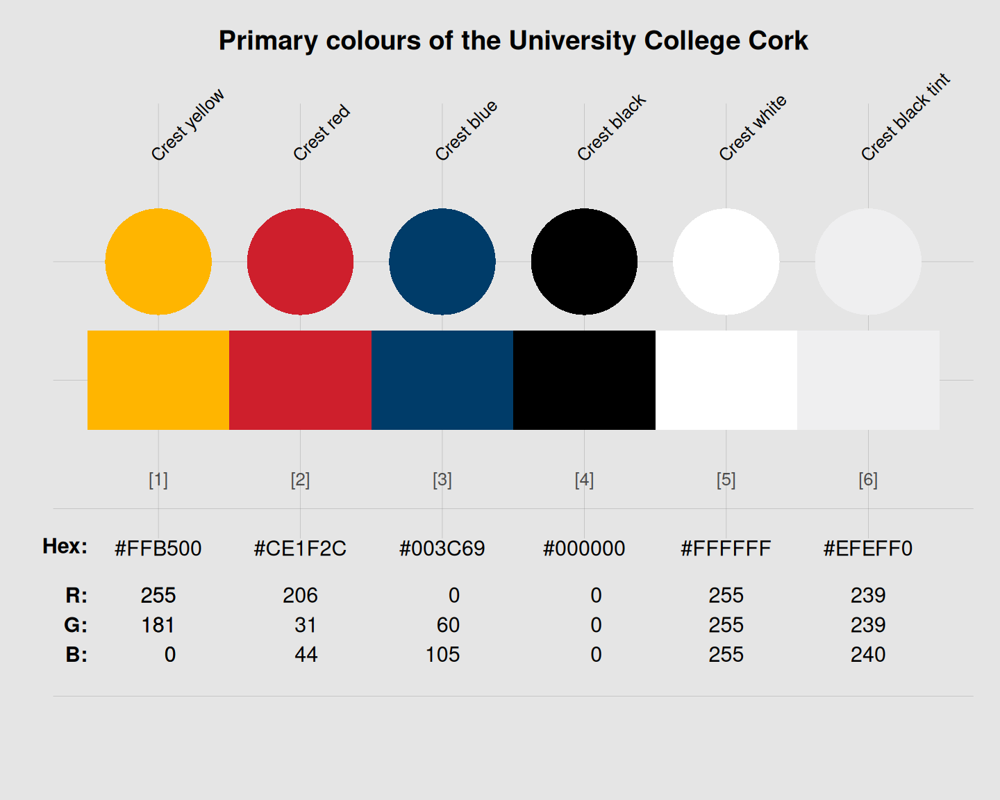

ucc_1 provides the six primary colours
of the University College Cork, Ireland.
Source
Color definitions are based on UCC's Visual identity guidelines (PDF of 2017, p. 26f.).
Details
The 6 primary colours are
Crest yellow, defined as Pantone 7549C, C0 M20 Y100 K0, R255 G181 B0, or HEX "#FFB500",
Crest red, defined as Pantone 1795C, C0 M96 Y90 K2, R206 G31 B44, or HEX "#CE1F2C",
Crest blue, defined as Pantone 2955C, C100 M45 Y10 K37, R0 G60 B105, or HEX "#003C69",
Crest black, defined as "black", Pantone Black, C0 M0 Y0 K100, R0 G0 B0, or HEX "#000000",
Crest white, defined as "white", C0 M0 Y0 K0, R255 G255 B255, or HEX "#FFFFFF", and
Crest black tint, defined as C0 M0 Y0 K6, R239 G239 B240, or HEX "#EFEFF0".
ucc_1 uses the HEX color definitions.
These colours are to be used at a university level (on both coated and uncoated paper).
Colour plays an important part in UCC's identity and renders all communications consistent and cohesive.
The primary colour palette uses the four colours from the crest.
In all communications the bold use of white space is a key element of UCC's use of colour. When choosing a colour to complement photography, care should be taken to ensure it is compatible.
Please do not use tints of the colours except on the colours indicated.
See also
ucc_2 for secondary colours of the University College Cork;
seecol for viewing and comparing color palettes;
usecol for using color palettes;
simcol for finding similar colors;
newpal for defining new color palettes;
grepal for finding named colors.
Other Irish university color palettes:
galway_1,
galway_2,
limerick_1,
limerick_2,
maynooth,
trinity_1,
trinity_2,
ucc_2,
ucd
Examples
ucc_1
#> Crest yellow Crest red Crest blue Crest black
#> "#FFB500" "#CE1F2C" "#003C69" "#000000"
#> Crest white Crest black tint
#> "#FFFFFF" "#EFEFF0"
unikn::seecol(ucc_1, col_bg = "grey90",
main = "Primary colours of the University College Cork") # view palette
